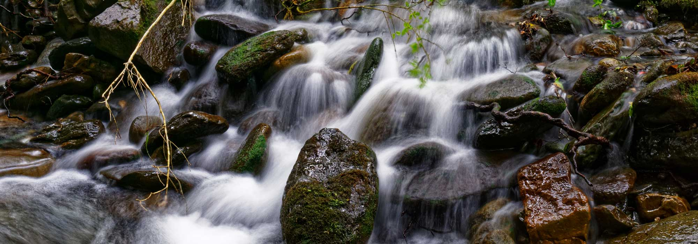
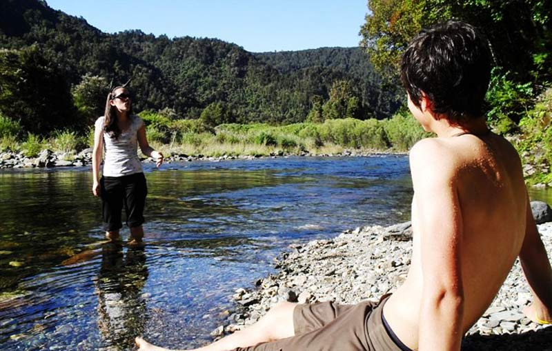
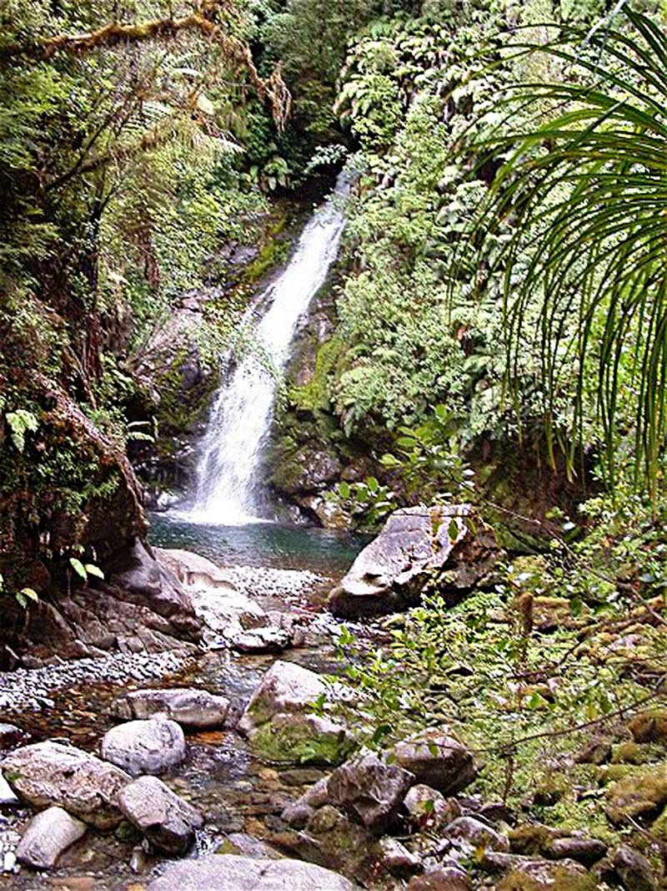

A little room for wonder
Less rushing.
More looking around.
Let Rainbow be your quiet base for the Anatoki Valley and Golden Bay. There’s plenty to discover, and no need to do it all at once.


At the water’s edge
Meet the Anatoki.
The river is a short stroll away: a place for a summer dip, a quiet sit on the bank, or a little gold panning. Ask us about local spots and conditions when you arrive.
River conditions change with the weather. Check locally before heading out, and take care around the water.

Into the native bush
A very good
neighbour to have.
Kahurangi National Park borders the community. From day walks to longer tramps, the surrounding forest offers plenty of reasons to lace up your boots.
Ask about the waterfall and local walks. Check current track information and weather before heading into the park.
Kahurangi information at DOC
Take the day as it comes
Find your own pace.
Read in the garden. Share a tune in the lounge. Head into Tākaka, or spend a day exploring Golden Bay. Then come back to a peaceful valley at the end of it.
Prefer a little more activity? Ask us about gold pans and the local glowworm walk. We’re happy to share ideas for your stay.
Find a place to stayYour own little corner of Golden Bay
A good base.
A beautiful place.
Start with a stay, and see where the day takes you.